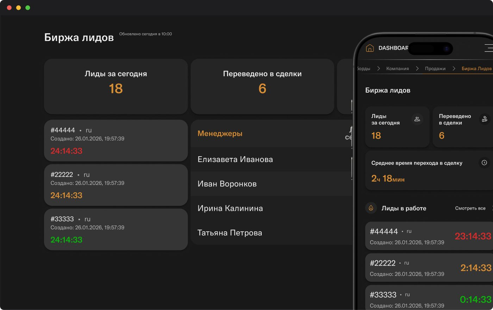

Ссылки
Вводные
Разработка системы аналитических дашбордов для руководителей компании. Дашборды объединяли ключевые показатели работы студии и позволяли в одном интерфейсе отслеживать финансовые результаты, эффективность сотрудников и ход проектов.
Отвечала за структуру дашбордов, информационную архитектуру, логику отображения данных, визуализацию показателей и UI-дизайн интерфейсов.
Проблема
Ключевая информация о работе компании была распределена между разными источниками. Руководителям было сложно быстро получить целостную картину по финансовым показателям, сотрудникам и текущим проектам без ручного сбора и анализа данных.
Цель
Создать единое пространство для управленческой аналитики, которое позволяло бы быстро оценивать состояние компании и отдельных направлений, находить отклонения и принимать решения на основе актуальных данных.
Решение
Разработала структуру дашбордов, разделив аналитику по основным управленческим направлениям:
Финансы → Сделки → Сотрудники → Проекты → Общие показатели
В интерфейсах использовались:
- ключевые KPI и сводные показатели;
- финансовая аналитика по сделкам;
- показатели эффективности сотрудников;
- статусы и динамика проектов;
- графики, диаграммы и таблицы для анализа данных;
- фильтры и детализация показателей.
Основной акцент был на быстром считывании информации: сначала руководитель получает общую картину, после чего может перейти к деталям конкретного показателя, сотрудника, сделки или проекта.
Результат
Получилась единая система управленческой аналитики, которая позволяет руководству видеть текущее состояние студии, контролировать финансовые показатели, оценивать эффективность команды и отслеживать ход проектов в одном интерфейсе.